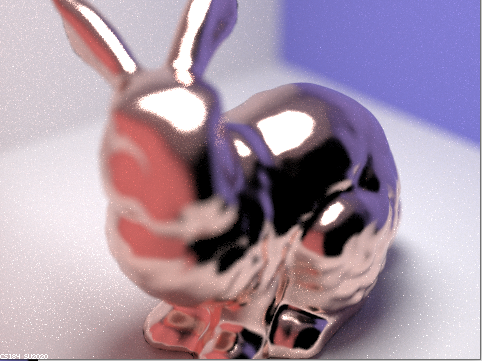

Parts to be graded: P2 and P4
Overview
The path-tracing algorithm allows us to render realistic surface of scene objects via different technique. In part 2, we implemented the Microfacet model, making surface rendered more reasonable. In part 4, we implemented depth of field so that the focusing of scene can be adjusted to different distance.
Part 2. Microfacet Material
What we did?
In this part, we implemented the Microfacet model to simulate different types of conductor materials, specifically those isotropic rough conductors that only reflect. To decide how the microfacets' normals are distributed, we implement the normal distribution function (NDF) with Beckmann distribution. With material roughness, we can compute the NDF at half vector h. We also calculate the wavelength-dependent Fresnel term for air-conductor. We look for specific \(\eta\) and \(k\) values for one material, plugging them into the formula to calculate the Fresnel term. With these and the shadowing-masking term, we can realize the BRDF evaluation function for this Microfacet model. Finally, we re-write the sampling function to implement importance sampling, calculating the actual pdf \(p_\omega(w_i)\) for the sample rays in this Microfacet model.
Show a screenshot sequence of 4 images of scene `CBdragon_microfacet_au.dae` rendered with $\alpha$ set to 0.005, 0.05, 0.25 and 0.5. The other settings should be at least 128 samples per pixel and 1 samples per light. The number of bounces should be at least 5. Describe the differences between different images. Note that, to change the $\alpha$, just open the .dae file and search for `microfacet`.
The variable \(\alpha\) is the roughness of the macro surface, and this value significantly affects how picture is rendered in Microfacet model. The smaller
\(\alpha\) is, the smoother the macro surface will be. Visually, we see the material looks more diffuse with large \(\alpha\), and looks more glossy with small \(\alpha\).
Here, we rendered four dragon picture with \(\alpha\)s equal to 0.005, 0.05, 0.25, and 0.5.
By comparing the pictures below, we see that with large \(\alpha\) (0.5), the dragon looks diffuse. The surfuce looks rough and does not reflect its environmental details.
This is because the microfacets are uneven and reflecting lights to many different directions. Contrast to the large \(\alpha\), dragon with a small \(\alpha\) (0.005) appears
to be more glossy and mirror-like, and the environmental details are reflected on the statue's surface. This is because, with a small \(\alpha\), the macro surface becomes
smoother, and the microfacets are more aligned together. However, as we see in picture, a small \(\alpha\) might cause more noise (white dots) when rendering.
|
|

|
|
|
|
Show two images of scene `CBbunny_microfacet_cu.dae` rendered using cosine hemisphere sampling (default) and your importance sampling. The sampling rate should be fixed at 64 samples per pixel and 1 samples per light. The number of bounces should be at least 5. Briefly discuss their difference.
|
|
|
Comparing two pictures, we find the bunny rendered on the left has more black dots and white noise than the bunny on the right. The right bunny, which is rendered with importance sampling the microfacet BRDF, looks more natural and copper-like. This is because, in importance sampling, we calculate the \(p_\theta\) and \(p_\phi\) to resemble the \(D(h)\) (NDF with Beckmann distribution at half vector h). Acoording to the importance sampling theory, the more these pdfs resemble the NDF on h, the less noise we will see. With Cosine hemisphere sampling, we sample the rays based on the cos pdf on the hemisphere, and this pdf does not match with the NDF we used on our microfacet, which is the Beckmann distribution. As we assume the specular of the surface, the cos-hemishpere sample rays mismatch with the actual reflection rays on the microfacets. Therefore, we see many black spots on the rabbit. For importance sampling with NDF (Beckmann), we calculate the \(p_\omega(w_i)\) based on the microfacet and its roughness, also the half vector h using \(\theta, \phi\). Hence, we better incorporate the microfacet's feature and generate a better picture.
Show at least one image with some other conductor material, replacing `eta` and `k`. Note that you should look up values for real data rather than modifying them arbitrarily. Tell us what kind of material your parameters correspond to.
Refering to this website, we set the wavelength to 614 nm (red), 549 nm (green) and 466 nm (blue). And we find the
\(\eta = 2.8851 | 2.9500 | 2.6500\)
\(k = 3.0449 | 2.9300 | 2.8075 \)
for Iron material. We update the microfacet in CBdragon_microfacet_au.dae and CBbunny_microfacet_cu.dae with new value of eta and k. And we get following pictures
showing the bunny and dragon statues with iron surface:
|
|
|
Part 4. Depth of Field
For these subparts, we recommend using a microfacet BSDF scene to show off the cool out of focus effects you can get with depth of field!In a few sentences, explain the differences between a pinhole camera model and a thin-lens camera model.
The thin-lens camera model simulate real human-eye effect that only objects on plane of focus are focused and clear to see while other places in the scene is out of focus. \n Unlike pinhole camera, Location on the image plane in thin-lens model takes radiance from rays going from not only the center of lens but also other places on the len that has rays refracted to the same location on the image plane. If we trace back that refracted ray back to the scene, we will find it intersecting the ray that originates from the same location on the image plane and goes through center of the len at the plane of focus, which is focal distance away from the len. \n We generate that refracted ray by uniformly sample the len disk to the scenes and do ray tracing stuff that we have done in project 3-1 will give us the depth of field effect.
Show a "focus stack" where you focus at 4 visibly different depths through a scene. Make sure to include all screenshots.
We rendered "CBbunny_microfacet_cu.dae" using 4 different focal distance, while using 256 samples per pixel, 4 samples per light, max ray depth of 12, and lens radius of 0.05 . We can gradually see clearly the head, ears, and body of the bunny as we increase the focal distance.
|
|
|
|
|

|
Show a sequence of 4 pictures with visibly different aperture sizes, all focused at the same point in a scene. Make sure to include all screenshots.
We rendered "CBbunny_microfacet_cu.dae" using 4 different lens radius, while using 256 samples per pixel, 4 samples per light, max ray depth of 12, and focal distance of 1.4 . We can see as lens radius goes up, locations other than center of the image becomes harder to see clearly.

|
|
|
|
|
Contribution
Our team includes Zhiqi Yan and Chaomin Li. Each person came up with his implementations for Part 1. In addition, Chaomin did part 2, and Zhiqi did part 4. And we together did the code review and optimization. The final version includes the code from both of us. For the report, Zhiqi wrote the Overview and Part4, and Chaomin wrote Part 2 and contribution. We contributed equally to the project report. During the whole homework, we work together, learn from the each other, and discuss our implementation of different parts in this homework.